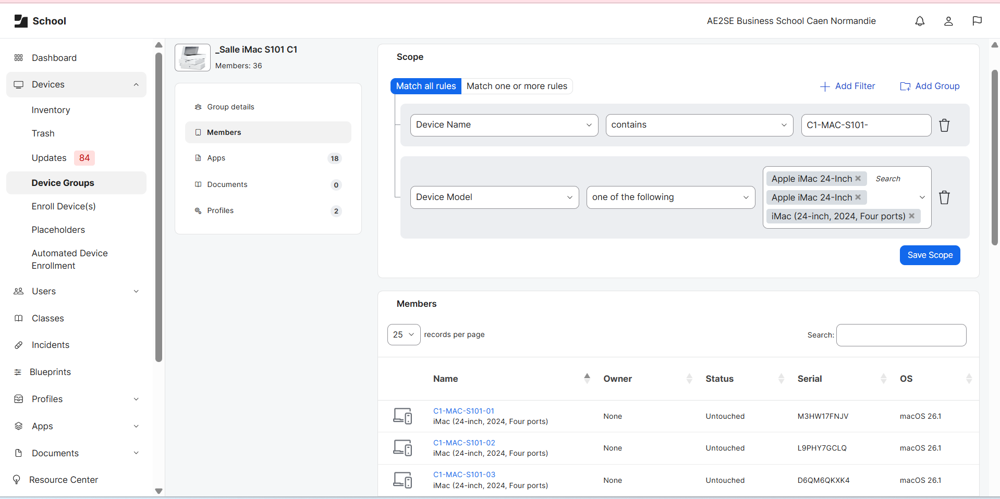

Le parc iMac d'une salle informatique de l'E2SE a été renouvelé. J'ai pris en charge le décommissionnement des anciens équipements ainsi que la configuration et la mise en service des 25 nouveaux iMac, en m'appuyant sur JAMF Pro pour pousser les configurations à distance.
